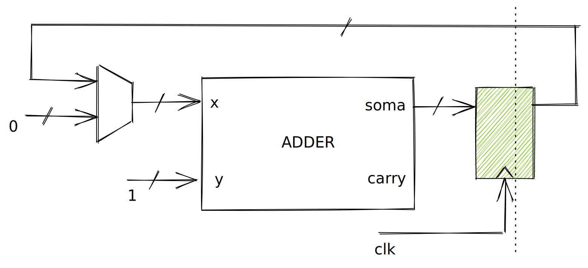

Lab 10: Lógica Sequencial
Warning
 O laboratório só pode ser realizado com FPGA.
O laboratório só pode ser realizado com FPGA.
MAC M1? Use uma das NUCs do laboratório.
Exercise 1
Warning
Sempre que for abrir um terminal novo e acessar a pasta, será necessário ativar o ambiente virtual:
. env/bin/activate
Começando
Agora vamos ver como implementamos uma lógica sequencia em MyHDL! Até agora temos utilizado o decorator: @always_comb para indicar que uma função deve ser interpretada como um trecho combinacional:
@always_comb
def comb():
led.next = l
Agora vamos começar usar um novo decorator (@always_seq) para indicar que uma função deve ser sequencial e depender do clock e do reset. O módulo a seguir demonstra como implementar um flip-flop tipo D em MyHDL:
@block
def dff(q, d, clk, rst):
@always_seq(clk.posedge, reset=rst)
def seq():
q.next = d
return instances()
Notem que estamos usando @always_seq(clk.posedge, reset=rst), e indicando que o módulo deve ser acionado na borda de subida do sinal clk e que o sinal de reset deve ser o rst.
Podemos interpretar o def seq() da seguinte maneira: Sempre que o sinal clock variar de 0 para 1 a função é acionada e então a saída q recebe a entrada d. Podemos visualizar isso como um while True:
while True:
q.next = d
time.sleep(1/CLOCK)
dff - FlipFlop tipo D
Exercise 2
Aplicando
Com a possibilidade de executarmos uma acão por clock, conseguimos realizar tarefas que não eram possíveis antes como por exemplo contar eventos.
Exercise 3
Clock
Os dois módulos anteriores foram realizados utilizando o botão 0 (key_s[0]) como sinal de clock para o nosso módulo, mas isso não é o jeito certo de trabalharmos com lógica sequência. O cenário correto, seria de usar um clock gerado em hardware e não pelo botão. A partir de agora iremos usar na entrada do clock o sinal CLOCK_50 que é um clock de 50Mhz gerado pela placa. Notem que 50Mhz significa 50 000 000 vezes por segundo! Isso parece muito né? Mas, dependendo do projeto, podemos elevar o clock para 200Mhz ou usar FPGAs mais rápidas que chegam próximo do 1GHz.
Piscando o LED
Agora com o uso da lógica sequencial conseguimos contar 'tempo' e gerar eventos em determinado momento. Ou seja: podemos contar 0.5 segundos e mudar o valor do led (usando como base o nosso clock que é um valor fixo), contar mais 0.5 s e mudar novamente (fazer o famoso pisca led). Para isso, teremos que conseguir contar eventos de clock, e quando o valor chegar em 25 000 000 inverter o valor do LED e zerar o contador e ficar nesse loop para sempre.
Podemos usar o nosso adder do lab anterior como módulo de contador, conectando a saída do adder na entrada x, mas passando por um registrador antes (para apenas mudar a cada clock). A entrada y será conectado ao valor 1, como resultado teremos: s = x + 1. A expressão será executada a cada subida do clock. E x será:
if s < MAX:
x.next = s
else:
x.next = 0
Se o valor de s for menor que o valor máximo (define a velocidade que o LED irá piscar) copiamos a saída do somador para a entrada, e se o valor MAX for atingido, iremos zerar o somador, para começarmos novamente. O HW que queremos gerar é algo como:

A ideia de piscar o LED é que temos que mudar uma variável a cada ciclo do contador.
----------- -------------
| | | Status
| | |
----------- ----------
_ 25000000 _ _
/ | / | / |
/ | / | / | Contador
/ | / | / |
/ |/ | / |
A implementação em MyHDL fica:
@block
def blinkLed(led, clk, rst):
cnt = Signal(intbv(0)[32:])
l = Signal(bool(0))
@always_seq(clk.posedge, reset=rst)
def seq():
if cnt < 25000000:
cnt.next = cnt + 1
else:
cnt.next = 0
l.next = not l
@always_comb
def comb():
led.next = l
return instances()
Alguns detalhes devem ser levados em consideração na implementação do componente:
- O
seqacontece a cada mudança do clock - O
combacontece sempre - Não podemos
leruma saída - Em hardware as coisas acontecem ao mesmo tempo!
E então atribuímos o valor de l para a saída led na parte combinacional do módulo:
def comb():
led.next = l
Essa atribuição poderia ser feita dentro da parte sequencial do componente:
@always_seq(clk.posedge, reset=rst)
def seq():
if cnt < 25000000:
cnt.next = cnt + 1
else:
cnt.next = 0
l.next = not l
led.next = l
Exercise 4
Exercise 5
Answer
- 32 bits = 4294967296
- al/50M = 85s ! (maior tempo entre piscada dos leds)
Faz diferença sim! Quando mais bits, mais registradores temos que usar e maior ficar o hardware.
Poderíamos dimensionar o tamanho do vetor de acordo com o time_ms que foi passado para o módulo.
Exercise 6
Exercise 7
Exercise 8
Exercise 9